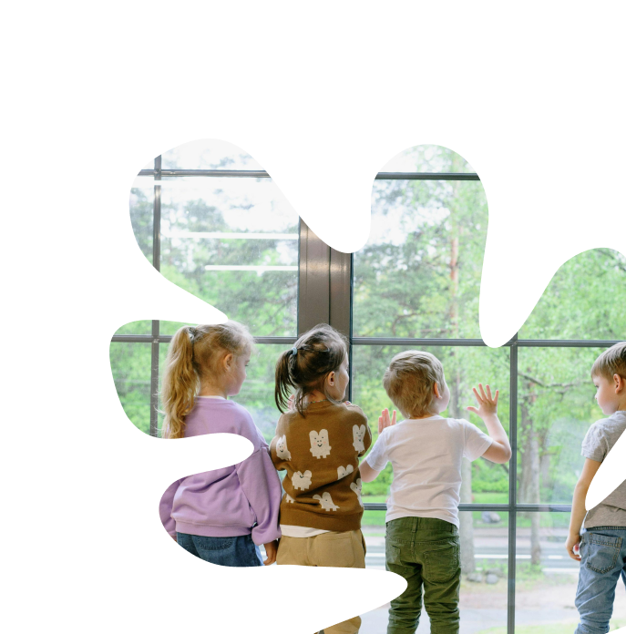

Welcome to Acorn Wood Education and Care
At Acorn Wood, we know that children heal, grow, and learn best when they feel safe, seen, and connected.
Learn More
work at acorn wood
A different kind of care
We provide a safe, warm, nurturing, responsive space, which recognises a child’s aching and primal need to be seen, heard, considered, loved and included.At Acorn Wood, care begins with connection. We understand that children heal and grow when they feel safe and understood. Our approach goes beyond routines and expectations - it is guided by trusted relationships, predictable environments, and a deep, psychological understanding of each child’s unique needs and individual experiences.At Acorn Wood, we provide specialist support for children age five to sixteen years. Our model of care is not only about meeting basic needs; it is about helping children to self-regulate, reflect and build resilience, whilst moving from surviving in the world to truly thriving. Every child in our care is offered a safe place to belong and a carefully tended path to grow.